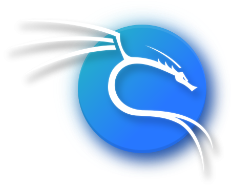
Kali Linux is an open-source, Debian-based Linux distribution geared towards various information security tasks, such as Penetration Testing, Security Research, Computer Forensics and Reverse Engineering.
Kali Linux is not about its tools, nor the operating system. Kali Linux is a platform.
You can take any Linux and install pentesting tools on it, but you have to set the tools up manually and configure them. Kali is optimized to reduce the amount of work, so a professional can just sit down and go.
A version of Kali is always close to you, no matter where you need it. Mobile devices, Containers, ARM, Cloud providers, Windows Subsystem for Linux, Pre-built Virtual Machine, Installer Images, and others are all available.
With the use of metapackages optimized for the specific tasks of a security professional, and a highly accessible and well documented ISO customization process, it's always easy to generate an optimized version of Kali for your specific needs.
Whether you are a seasoned veteran or a novice, our documentation will have all the information you will need to know about Kali Linux. Multiple tips and "recipes" are available, to help ease doubts or address any issues.
Kali Linux, with its BackTrack lineage, has a vibrant and active community. There are active Kali forums, IRC Channel, Kali Tools listings, an open bug tracker system, and even community provided tool suggestions.
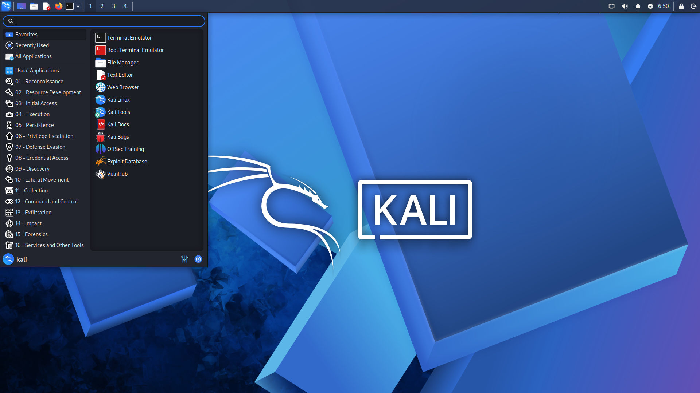
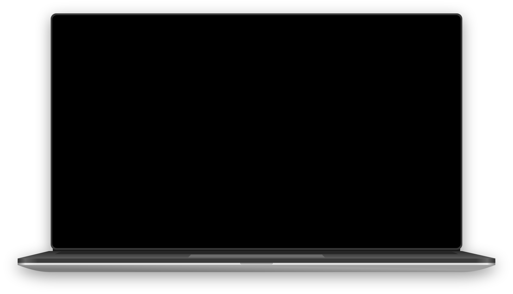
The Kali Linux penetration testing platform contains a vast array of tools and utilities. From information gathering to final reporting, Kali Linux enables security and IT professionals to assess the security of their systems.
Find out all about Kali's Tools ›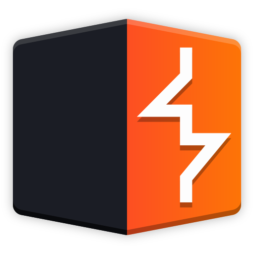
Burp Suite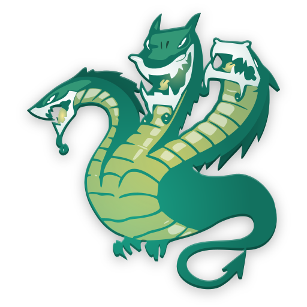
Hydra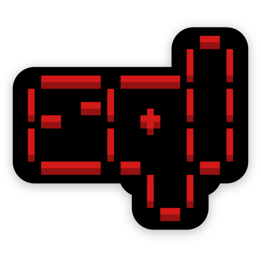
sqlmap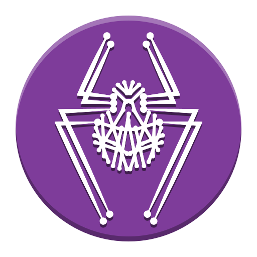
NetExec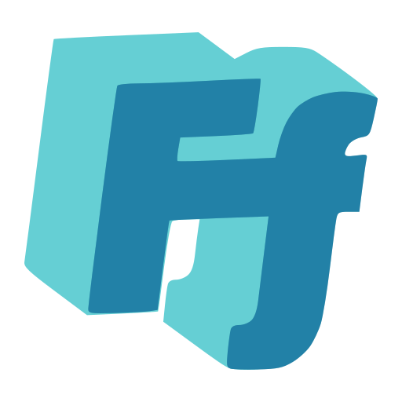
ffuf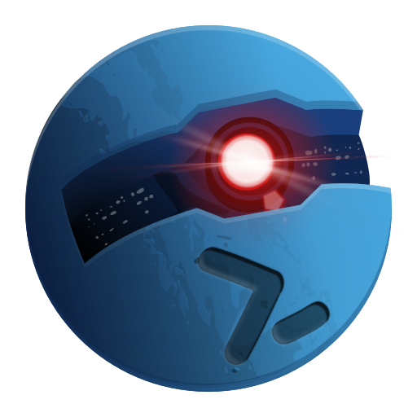
Starkiller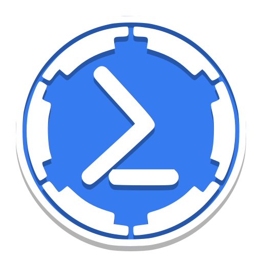
Empire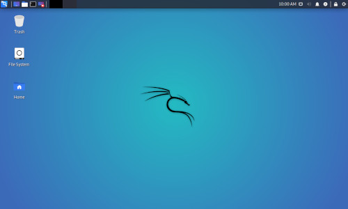
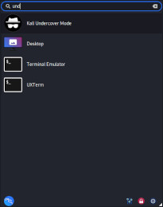
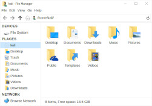
Using Kali in an environment where you don't want to draw attention to yourself? Kali Undercover is the perfect way to not stand out in a crowd.
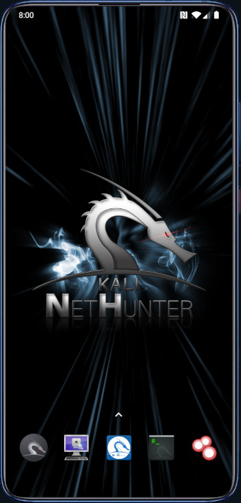
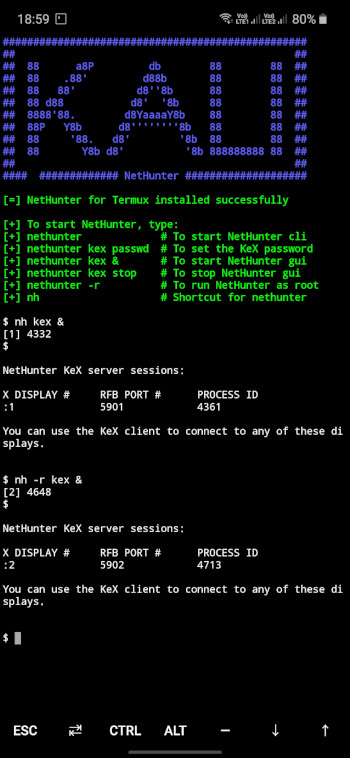
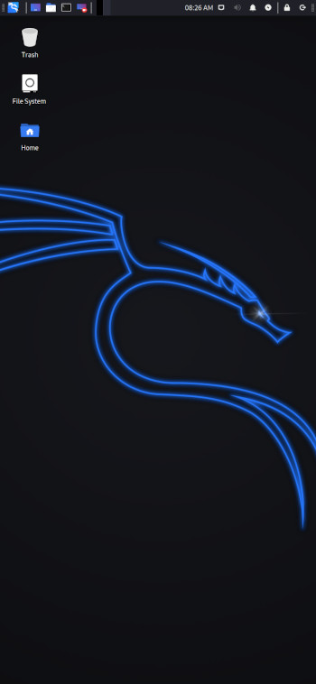
A mobile penetration testing platform for Android devices, based on Kali Linux. Kali NetHunter is made up of an App, App Store, Kali Container, and KeX.
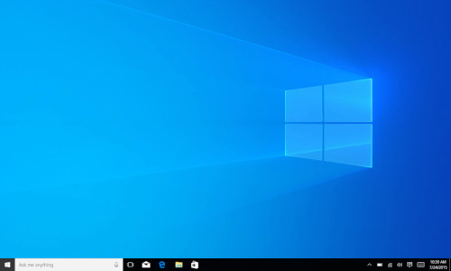
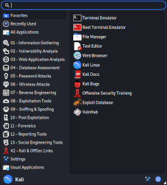
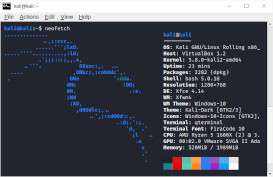
Win-KeX provides a full Kali Desktop Experience for Windows WSL. Applications started via Kali's panel will share the desktop with Microsoft Windows applications.
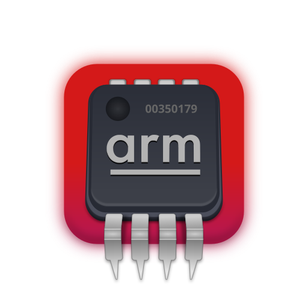
Cheap & low powered devices, which make for great leave-behind devices with long battery life.
Single or multiple boot Kali, giving you complete control over the hardware access.
Hosting providers which have Kali Linux pre-installed, ready to go, without worrying about the infrastructure.
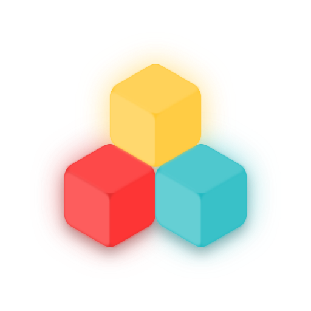
Using Docker or LXD, allows for extremely quick and easy access to all of Kali's tools.
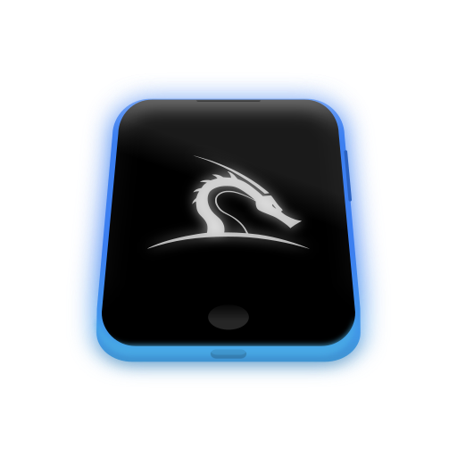
A mobile penetration testing platform for Android devices, based on Kali Linux.
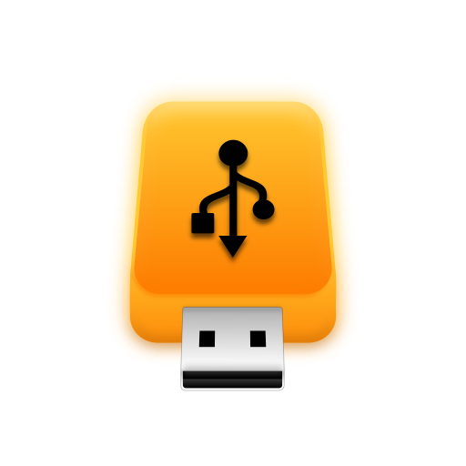
Kali in your pocket, ready to go with Live Boot. Your Kali, always with you, without altering the host OS.
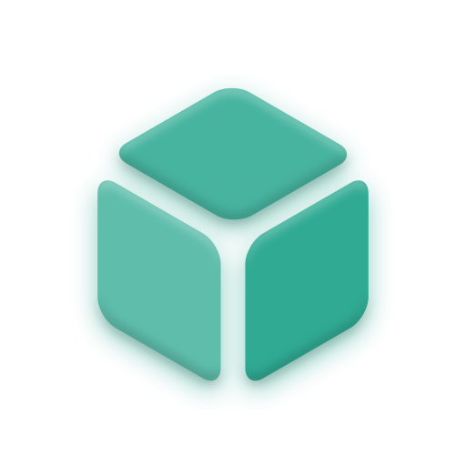
VMware, VirtualBox & QEMU pre-built images ready to go, allowing for a Kali install as bare as possible.
WSL is included out of the box with modern Windows. Start using Kali (and Win-KeX) without extra software.
Xfce is a lightweight desktop environment for UNIX-like operating systems. It aims to be fast and low on system resources, while still being visually appealing and user friendly.
Xfce consists of separately packaged parts that together provide all functions of the desktop environment, but can be selected in subsets to suit user needs. This is Kali's default desktop environment.
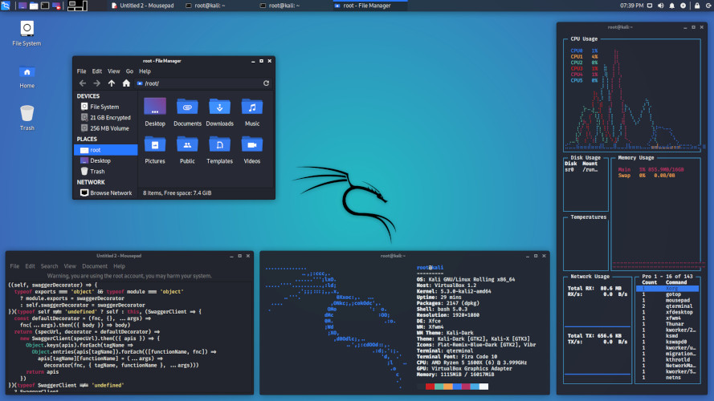
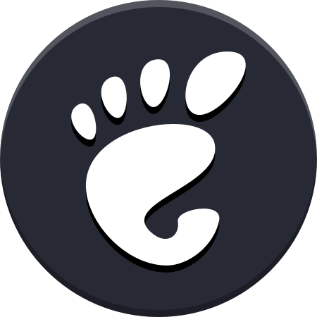
GNOME ShellEvery part of GNOME Shell has been designed to make it simple and easy to use. The Activities Overview is an easy way to access all your basic tasks. A press of a button is all it takes to view your open windows.
Having everything in one place is convenient and means that you don't have to learn your way through a maze of different technologies.
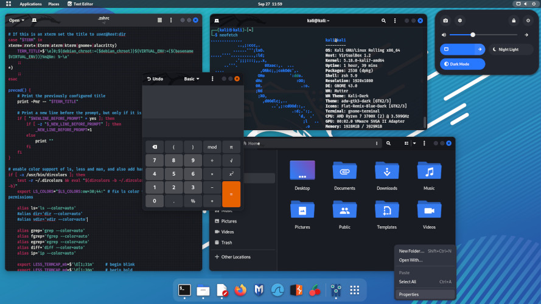
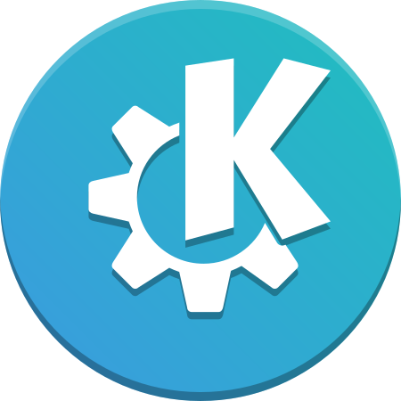
KDE PlasmaPlasma is made to stay out of the way as it helps you get things done. But under its light and intuitive surface, it's a powerhouse. So you're free to choose ways of usage right as you need them and when you need them.
With Plasma the user is king. Change the color scheme, move the panel, change the font, or download custom widgets and add them to your desktop or panel.
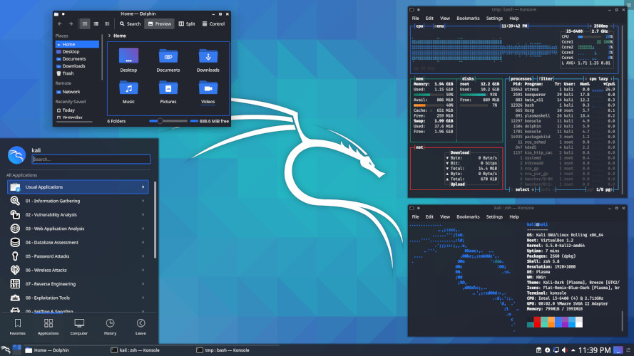
Latest news from our blog ›
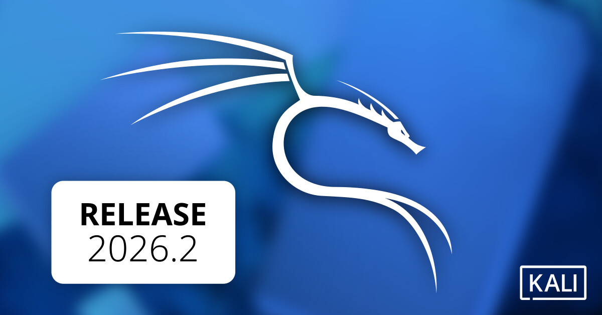
It's the final week of Q2, and Kali 2026.2 is here — right on schedule, with a mix of desktop refreshes and quality-of-life changes.
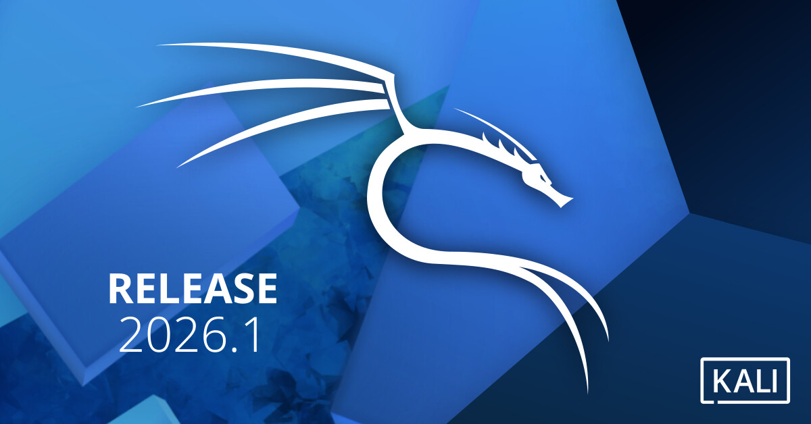
New year, new release — Kali 2026.1 is here! Everything from a fresh coat of paint to a nod to our roots, with ongoing improvements.
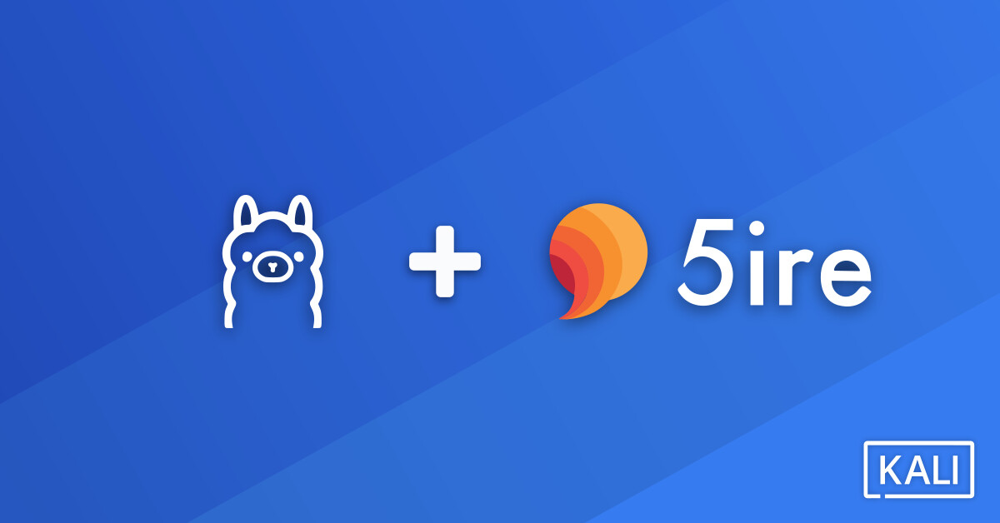
Extending our LLM-driven Kali series, where natural language replaces manual command input — fully local, no 3rd party services.
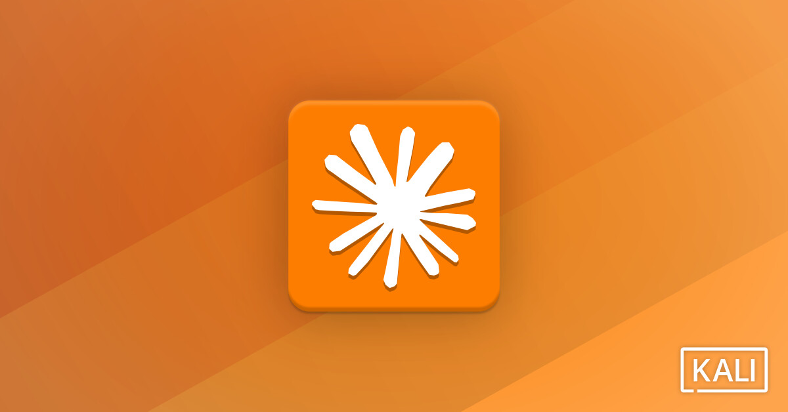
An alternative method of using Kali Linux, leveraging an LLM to translate natural language descriptions into technical commands.